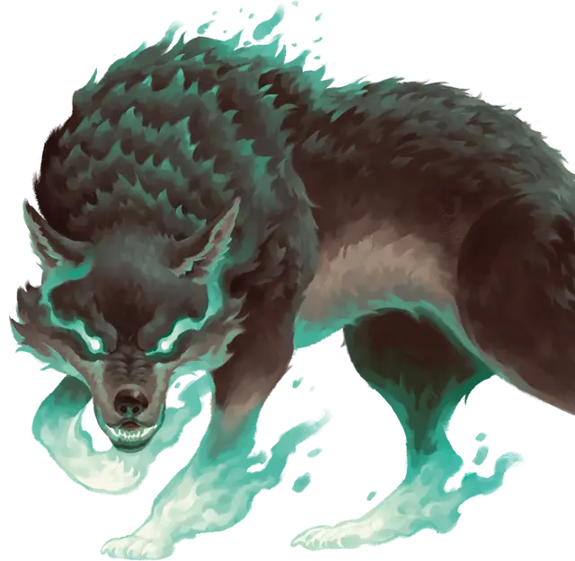

Дух зверя
Bestial Spirit
Маленький Зверь, без мировоззрения

Класс Доспеха 11 + уровень ячейки (природный доспех)
Хиты 20 (только воздух) или 30 (только земля или вода) + 5 за каждый уровень ячейки выше 2-го
Скорость 30 футов, плавая 30 футов (только вода), летая 60 футов (только воздух), лазая 30 футов (только земля)
| мод | спас | ||
|---|---|---|---|
| СИЛ | 18 | +4 | +4 |
| ЛОВ | 11 | +0 | +0 |
| ТЕЛ | 16 | +3 | +3 |
| мод | спас | ||
|---|---|---|---|
| ИНТ | 4 | −3 | −3 |
| МДР | 14 | +2 | +2 |
| ХАР | 5 | −3 | −3 |
Чувства тёмное зрение 60 футов, пассивное Восприятие 12
Языки понимает языки, на которых вы говорите
Опасность —
Особенности
Облёт (только воздух). Зверь не провоцирует атак, когда улетает за пределы досягаемости врага.
Тактика стаи (только земля или вода). Зверь имеет преимущество к броскам атаки против существа, если хотя бы один из союзников зверя находится в пределах 5 футов от цели атаки и союзник дееспособен.
Подводное дыхание (только вода). Зверь может дышать только под водой.
Действия
Мультиатака. Зверь совершает количество атак, равное половине уровня ячейки, использованной для призыва (с округлением в меньшую сторону).
Растерзание. Рукопашная атака оружием: ваш модификатор броска атаки заклинанием к попаданию, досягаемость 5 фт., одна цель. Попадание: 1к8 + 4 + уровень ячейки колющего урона.
Описание
Блок статистики для призыва духа зверя с помощью заклинания призыв духа зверя [summon beast].